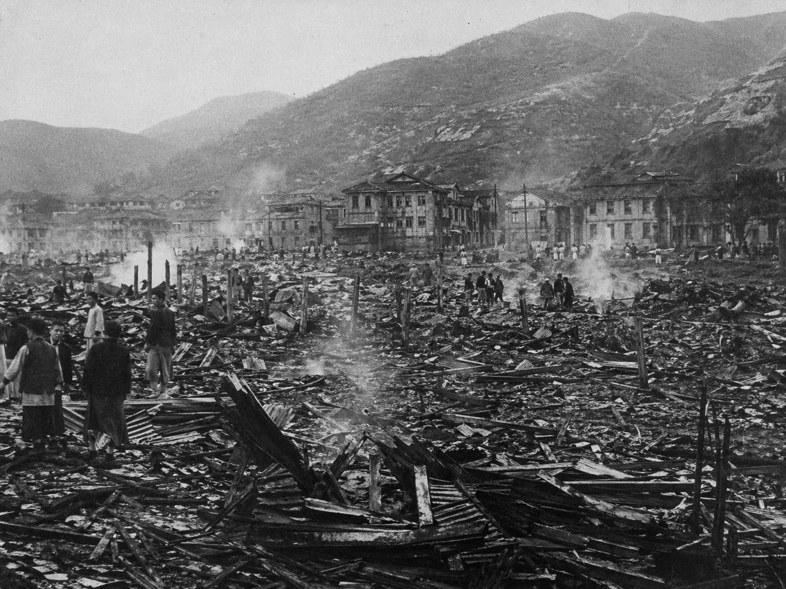
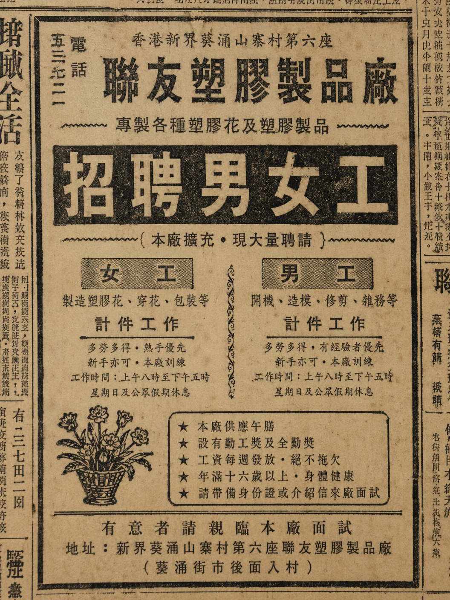
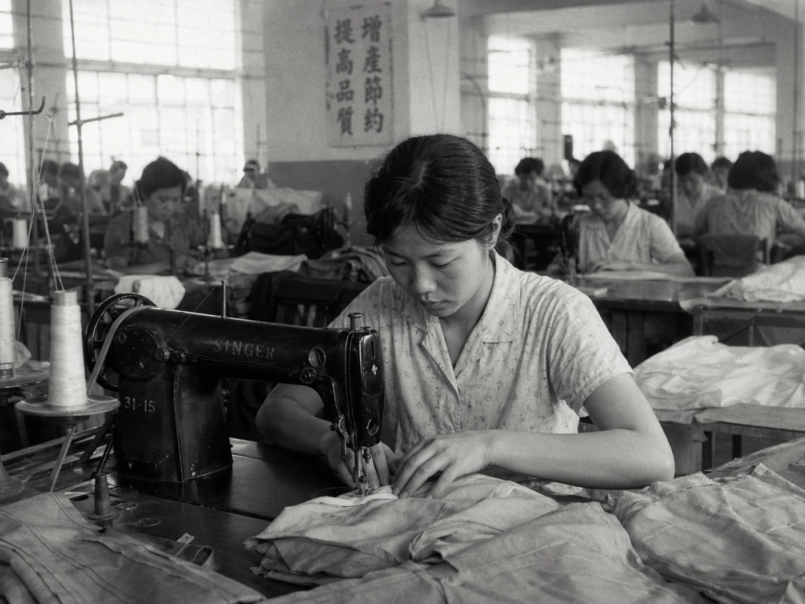
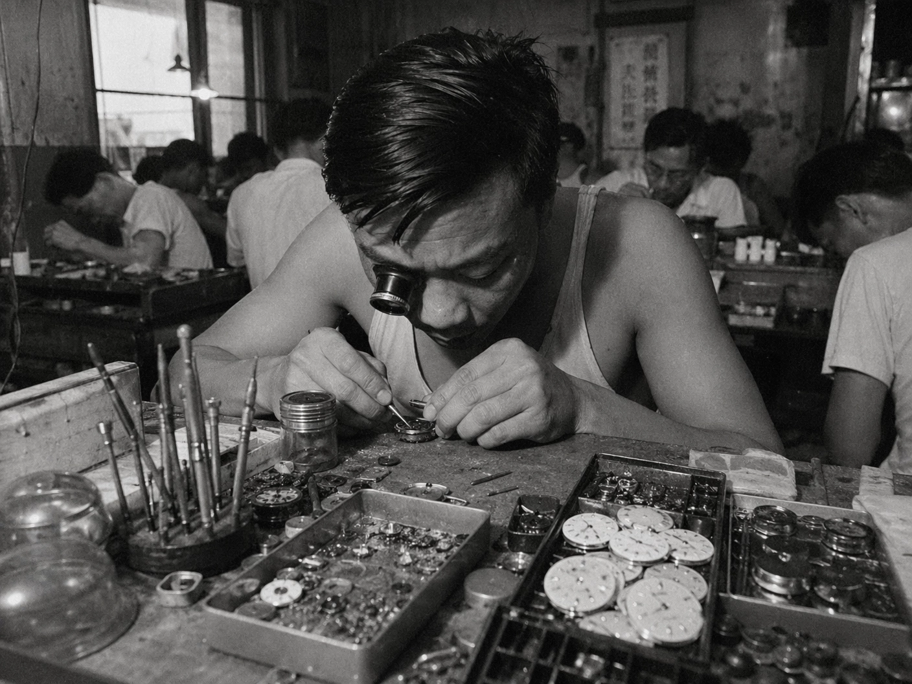
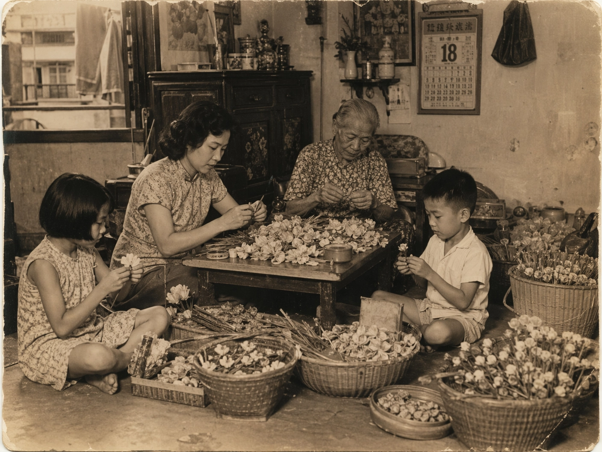
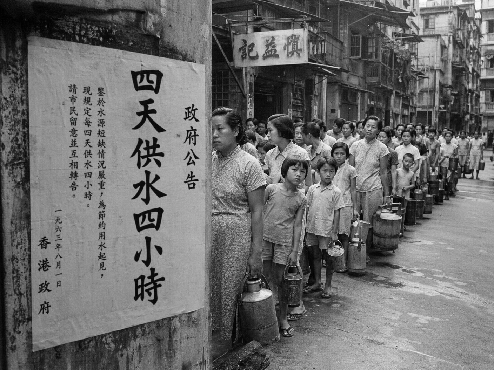
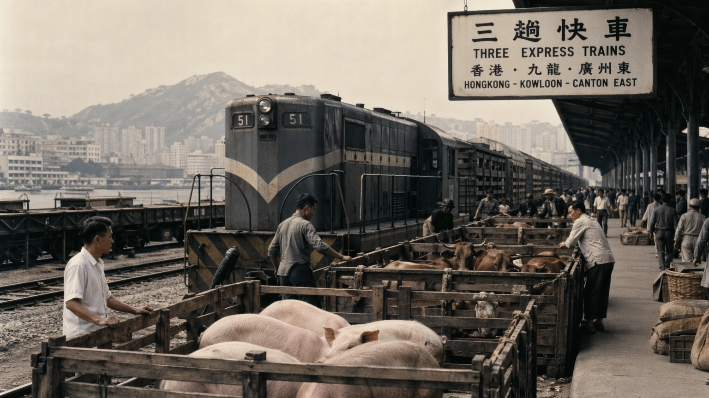
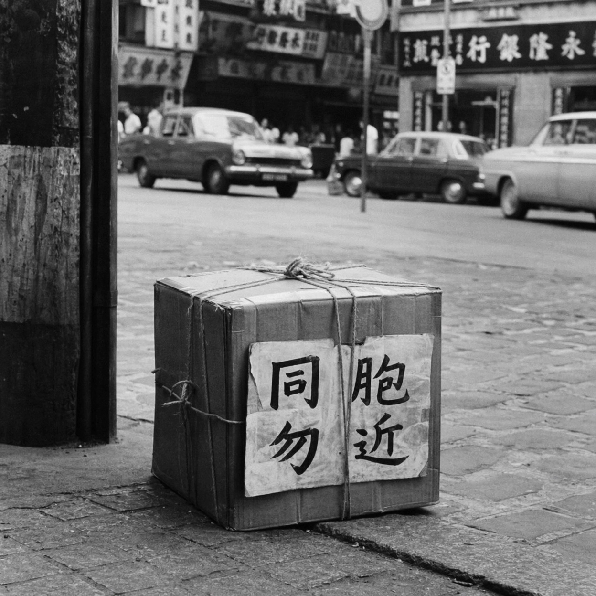

「無情大火吞噬兩千木屋，五萬災民寒風中泣訴，政府急謀安置之策...」

【點擊下方阿明的舊照片，看看當年山寨廠發展出哪三大輕工業：】

「軋軋」聲的青春

與時間競賽

為世界製造快樂


為確保香港市民的食品安全，身為檢查員的你，請點擊下方的活豬/活牛，為牠們蓋上「合格」印章，准許進港！

你在放工回家的路上，突然看見路邊放著一個奇怪的鞋盒，上面用紅漆寫著：
當時很多人因為好奇或不慎觸碰這些「土製炸彈」而喪命。你該怎麼做？
你已走過阿明的歲月，見證了香港在國情變化下的跌宕起伏。
請從右側詞庫中點擊詞語，填入左側文章的空格中，總結建國以來內地與香港的緊密關係。